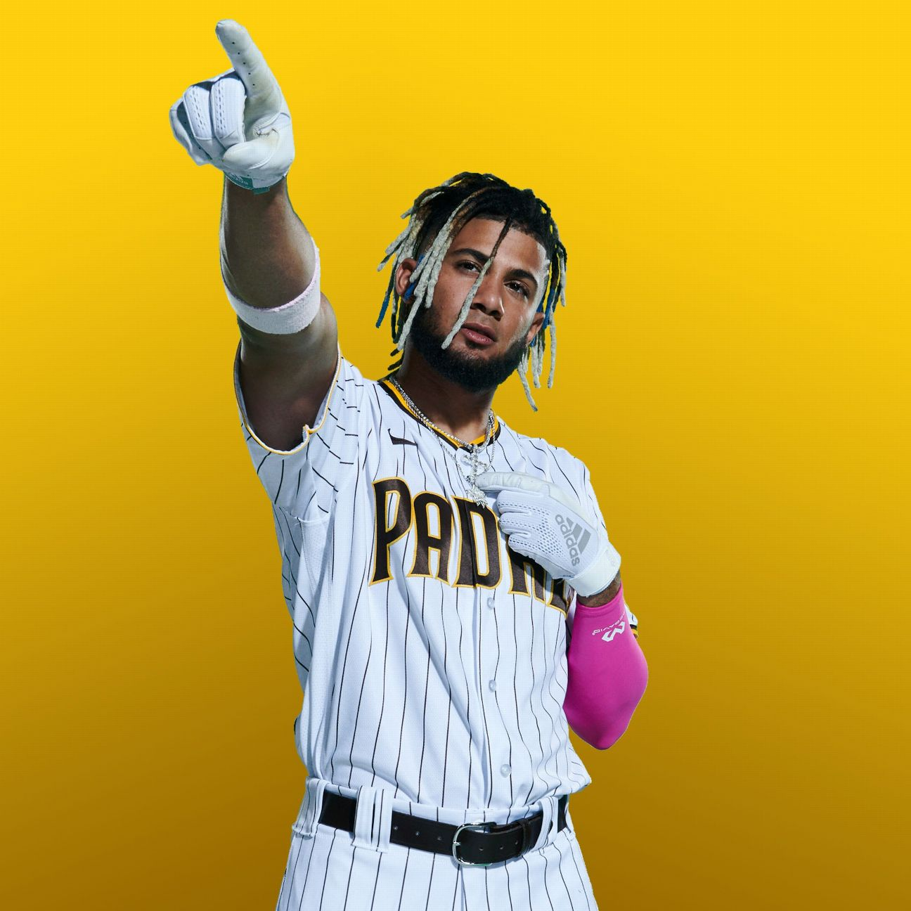

Challenges
This lab challenges us to take our webpage styling skills to a new level. This week we were taught how to add borders to our texts and images, as well as changing more styles as well. Overall, this lab allowed us to use all of the coding skills we have learned over th best few weeks.
Problems
One major problem I had while completeing this lab was my failed attempt to add a stroke to the headings of my text. I researched on W3 schools but was not able to get the code correctly down for it to work. Other than that, I did not have any other problems, making this lab smooth sailing.
Results
I have created a website that has a picture as well as three headers taht are contained inside a border. I also added borders around the page itself, and the image of Fernando Tatis Jr. I added different colors for the paragraphs as well as different colors for the backgrounds.
